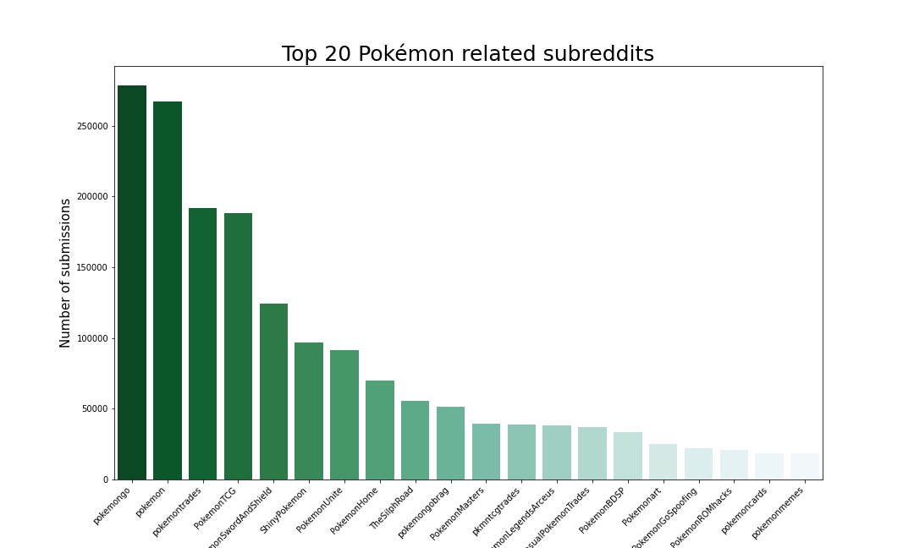
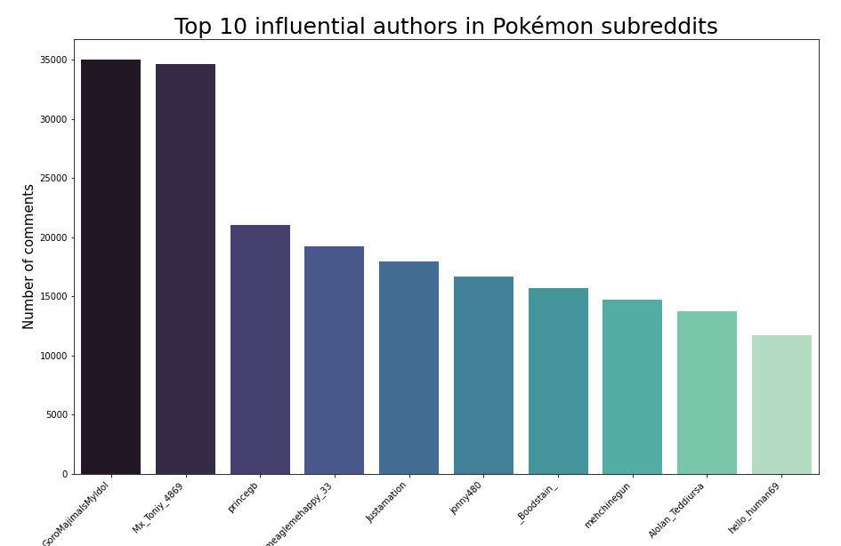
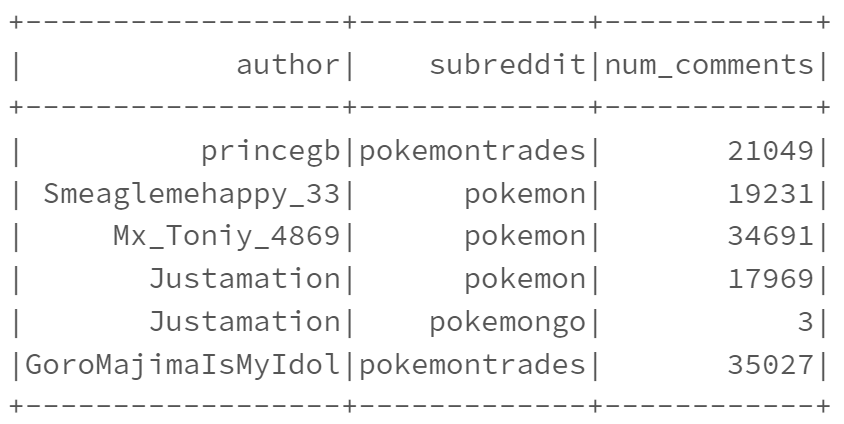
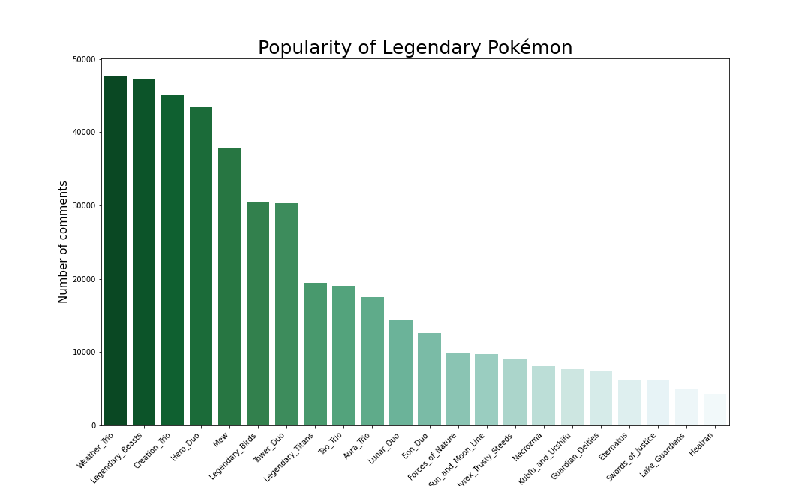
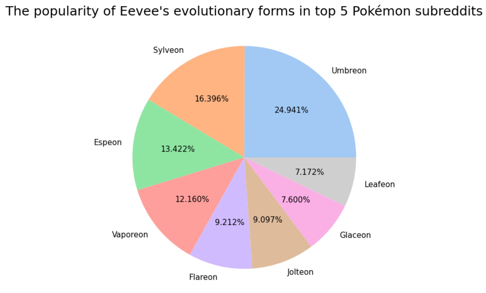
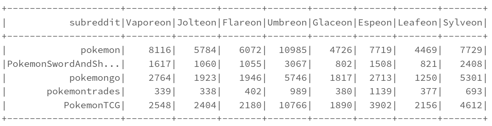
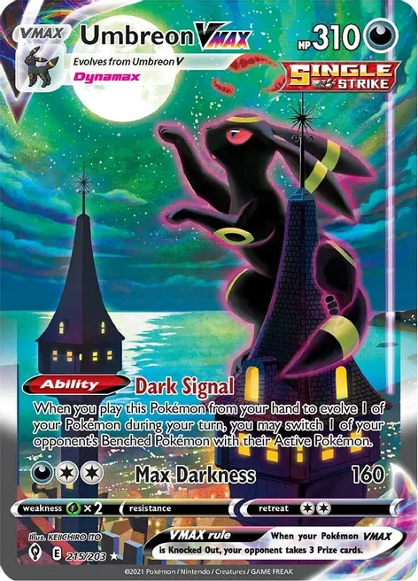
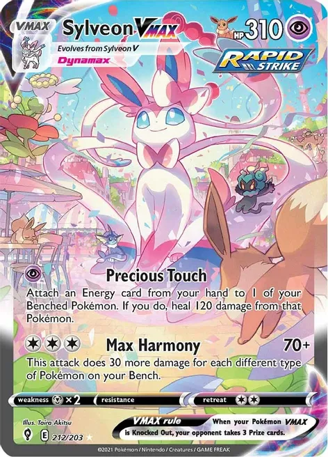

Milestone 1: Exploratory Data Analysis
Coding Notebooks
Executive Summary
|
 Figure 1. Top 20 Pokémon subreddits
In the exploratory data analysis, we focus our analysis on two parts: Pokémon related subreddits and people's discussion of popular Pokémon. The top 5 Pokémon subreddits shown in Figure 1 occupy more than 60% of Pokémon submissions, so our analysis will focus on the top 5 subreddits. Because of unique features of Pokémon Go, it become the most popular Pokémon products for last two years. We also realized that some events like annual Pokémon Present in February and release of new games can significantly increase popularity of subreddits. Active users are important for Pokémon community. Some users like “GoroMajimaIsMyIdol” and “Mx_Toniy_4869” are high quality creators. We think cooperating with them may create business values for The Pokémon Company. Then, we analyze the most important product of Pokémon IP which is Pokémon game. The popularities of recent four Pokémon games are influenced by certain events like in-game activities or release of new information. For the conclusion, our exploratory data analysis successfully achieves our business goals. In the next milestone, we will analyze people’s sentiments in subreddits and investigate how sentiments are affected by events we identified in EDA.  Figure 2. Top 15 popular Pokémon
Another important part of Pokémon is people’s discussion about popular Pokémon. We want to find out what Pokémon can receive people’s preference and why they are more popular than others. Charizard, Pikachu and Eevee are top three popular Pokémon. We think the success of Charizard and Pikachu can be attributed to their long history in Pokémon anime and the popularity of Eevee is mainly due to its cute appearance. We also analyze Legendary Pokémon and Weather Trio is the most popular one. Legendary Pokémon is closely connected to game storylines, so their popularity is greatly influenced by the corresponding games. At last, we analyze deeply into the most special Pokémon Eevee which has eight different evolutions. Umbreon and Sylveon are top two popular evolution forms and their popularity is reflected on their high trading card prices. In conclusion, the current exploratory analysis tells us the overall popularity of Pokémon. In the future milestones, we will further analyze popular Pokémon by studying sentiments received by these Pokémon. |
Analysis Report
1. What is the most popular subreddit related to Pokémon from January 2021?
We successfully achieve the business goal of finding the most popular Pokémon subreddits. We follow the proposed technical methods when performing analysis.
|
Figure 3. Top 20 Pokémon subreddits
The graph shows that pokemongo has the highest number of submissions. Indicating that it is the most popular subreddit among all subreddits related to Pokémon. Subreddit pokemon is the second most popular subreddit among all Pokémon related subreddits. The result suggests that Pokémon Go remains incredibly popular. The product is probably the most successful product derived from the IP of all time. In a business sense, a deeper dive into its logic is critical and lessons can be learned from the unprecedented success. Pokémon Go introduces customizable options, brings in social connections to the experience, and provides simple UI backed by advanced technology such as AR. That makes it accessible to a larger audience than traditional mobile games. In conclusion, the unique features of Pokemon Go largely influence its performance. |
2. What Pokémon events are successful marketing campaigns that can attract discussion and attention from players and interested parties?
We find out the events that can significantly affect subreddits’ popularity. The technical proposal remains the same when performing analysis.
|
Figure 4. Number of comments in top 3 popular Pokémon subreddits
The three events that caused the most discussion occurred on February 26, 2021, February 27, 2022, and August 3, 2022, respectively. February 27 is the birthday of the Pokémon. On this day, Nintendo will release new games and the annual Pokémon of the year.On February 26, 2021, Pokémon Presents released information of two new Pokémon games: Pokémon Brilliant Diamond and Shining Pearl which are remakes of the 2006 video games Pokémon Diamond and Pearl and Pokémon Legends: Arceus. This led to the climax of number of comments in the past two years.On February 27, 2022, The Pokémon Company celebrated by sharing a Pokémon Presents that revealed, among other things, that the open-world Pokémon Scarlet and Violet will be headed to the Nintendo Switch in 2022. Pokémon Day 2022 also unveiled new updates for Pokémon Legends: Arceus, Pokémon Brilliant Diamond, Shining Pearl, and many more.In August 2022 Pokémon Presents revealed new information about the upcoming Pokémon Scarlet and Pokémon Violet games arriving on the Nintendo Switch. This presentation also included updates for Pokémon GO, Pokémon UNITE, and Pokémon Café ReMix, along with a brief teaser for Pokémon Masters EX hinting at some exciting upcoming features. In conclusion, the events that most easily attract the attention and discussion of the players are the series activities of the birthday of Pokémon and the release of the new version of the Pokémon game. |
3. Does the most active author in reddit have commercial value?
We achieve the business goal that determine influential users in top 3 popular Pokémon subreddits. The technical proposal remains the same when performing analysis.
|

Figure 5. Top 10 influential authors
|
Table 1. Number of comments by authors in subreddits

|
4. How are the popularities of the recent 4 Pokémon games change from January 2021 to August 2022?
We determine the changes of popularity of recent 4 Pokémon games over time. The technical proposal remains the same when performing analysis.
|
Pokémon Sword and Shield has the highest average discussion and popularity among the four games. As the earliest released of the four games, this game has completed player accumulation. The overall user stickiness is high, and the game has good social attributes. Players are willing to discuss it on the reddit. Pokémon Brilliant Diamond and Shining Pearl (BDSP) is also widely discussed in the 2021 Pokémon day. The second discussion peak occurred in the middle of November, when the game was officially launched on the switch and brought about continuous high participation activities. In celebration of the release of these games on Nintendo Switch, Pokémon originally discovered in the Sinnoh region will be appearing more often in Pokémon GO. Turtwig, Chimchar, and Piplup wearing special Sinnoh-inspired hats will be appearing in the wild, and avatar items inspired by those same first partner Pokémon will be available in the shop. Pokémon Legends: Arceus is also widely discussed in the 2021 Pokémon day. The second discussion peak occurred on January 28th which is the official release date for Pokémon Legends: Arceus on Nintendo Switch. Pokémon Scarlet and Violet will be officially released on November 18, 2022. The first time players know about this game is on February 27, 2022. The following high discussion volume also came from the release of new information on June 1 and August 3. Players will be able to “explore an open world where various towns with no borders blend seamlessly into the wilderness.” Pokémon will appear in the skies, in the sea, and on the streets in the game world which can bring special experience to players. Figure 6. Number of submissions for Pokémon games
|
5. What is the most popular Pokémon discussed in subreddits?
We successfully determine the most popular Pokémon. To better analyze popular Pokémon, we separate Pokémon into normal Pokémon and Legendary Pokémon and find out the top 15 popular Pokémon respectively. Thus, we create a list of candidates of 30 instead of 15 which we proposed. Then, we create dummy variables for two categories separately.
|
Figure 7. Top 15 Popular Pokémon
Charizard is the Pokémon which receive the largest number of comments. Charizard is the ace Pokémon of protagonist named Ash in the first Pokémon anime series. Its cool appearance and strong performance in anime gave people very impressive memory. The popularity of Charizard last for decades and at current day, it's still the most popular Pokémon in social media. The second and third popular Pokémon are Pikachu and Eevee. Pikachu is the most well-known Pokémon in the world and is the iconic face of Pokémon franchise. The success of Pikachu is the result of long-time investment by The Pokémon Company. In 1997, Pikachu was chosen as the partner of protagonist Ash. After 25 years and more than 1200 episodes, Pikachu become the most-seen Pokémon to fans and has strong emotional connection to Pokémon lovers. After the success of Pikachu, The Pokémon Company attempts to create another iconic face of Pokémon universe and their choice is Eevee. Eevee is the most special Pokémon which has 8 different types of evolutions. In 2018, The Pokémon Company released two Pokémon games: Pokémon: Let's Go, Pikachu! and Let's Go, Eevee! In these games, player start with Pikachu or Eevee and they always sit on player character's shoulder in the overworld. This game further increased the popularity of Eevee. Due to specialty of Eevee, we will conduct further analysis about it. In addition of normal Pokémon shown above, we want to further investigate popularity of Legendary Pokémon. According to Pokémon Wiki, "Legendary Pokémon (伝説でんせつのポケモン, Pokémon of Legends), or Pokémon Illusions (幻まぼろしのポケモン, Phantom Pokémon) are extremely rare and often very powerful Pokémon that are often associated with legends of creation and/or destruction within their endemic regions". Legendary Pokémon is closely related to storyline in every Pokémon game and should receive a lot of attention in Reddit. The Weather Trio receive highest number of comments. The Weather Trio includes Kyogre, Groudon and Rayquaza which were first introduced in Pokémon Sapphire, Ruby, and Emerald in 2004. In the storyline of these games, the battle between Kyogre and Groudon causes huge disaster to the Pokémon world and Rayquaza mediates the battle. This was the first time Pokémon players saw battle between Legendary Pokémon which left very impressive memory to them. About 20 years later, Weather Trio still has the highest popularity among all Legendary Pokémon. 
Figure 8. Top 15 Popular Legendary Pokémon
|
6. Eevee is one of the most special Pokémon which has the greatest number of different evolutions. What is the most popular Eevee evolution in different subreddits?
We accomplish the business goal of finding the Eevee evolution that receives the greatest number of discussions in different Pokémon subreddits. We follow the technical proposal when performing analysis.
|

Figure 9. The popularity of Eevee evolutions
|
Table 2. Number of comments about Eevee evolutions in subreddits

|
|
Umbreon trading card (source: TCGplayer)

|
Sylveon trading card (source: TCGplayer)

|